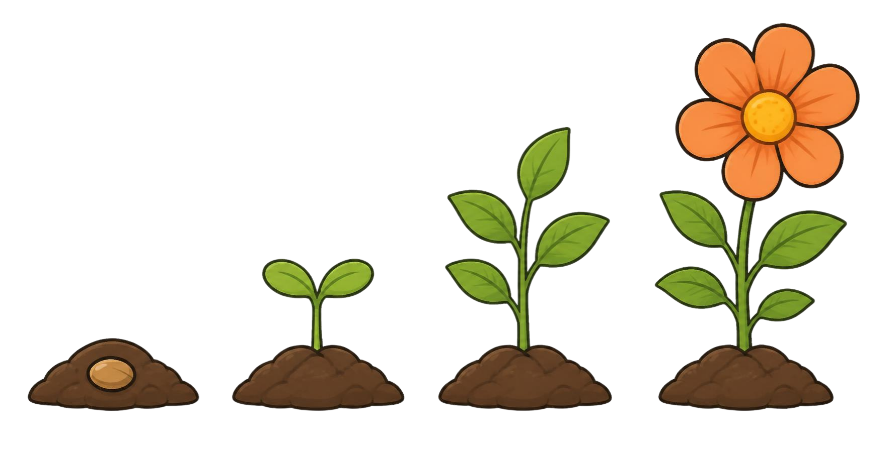

Name:Datum:
Lösung
Wie spät ist es?
Ich kann volle und halbe Stunden ablesen und einzeichnen.
Wähle bei 3 und 4 deine Aufgabe.
1
Lies ab. Schreibe die Uhrzeit auf.
2

Zeichne die Zeiger ein.
Erst der kleine Zeiger. Er zeigt die Stunde.
9 Uhr
2 Uhr
6 Uhr
halb 5
halb 8
halb 12
3
Wie spät ist es eine Stunde später?
3 Uhr → Uhr
8 Uhr → Uhr
11 Uhr → Uhr
halb 3 → halb
halb 7 → halb
halb 12 → halb
4
Willi sagt: „Eine halbe Stunde nach 7 Uhr ist es 8 Uhr.“ Stimmt das? Schreibe auf.
Nein. Eine halbe Stunde nach 7 Uhr ist es halb 8.
★
Knobeln: Wie spät ist es eine Stunde nach halb 12? Zeichne die Uhr in dein Heft.
Es ist .
Ich kann volle und halbe Stunden ablesen. So gut kann ich das schon. Kreuze an:

Was hat dir geholfen? das BeispielWillis Tippein anderes Kind